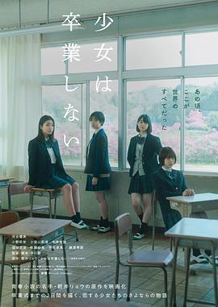

少女不毕业 / 少女は卒業しない
又名：Sayonara, Girls.
好吧，期待值过高了。毕业而已，怎么和跨越生死了一样。当年那么多次毕业也就是个里程碑而已。确实有十分怀念的同学/老师，但是并不是毕业典礼前会考虑的，都是怀旧感伤的时候才会想起来。然而真正想起来的时候却发现没有了联系方式，毕业后才是有更多故事发生的时候啊。 //看了评论，感觉主题有点Angel Beats的感觉
作品信息
| 导演 | 中川骏 |
| 编剧 | 中川骏 |
| 主演 | 河合优实 / 小野莉奈 / 小宫山莉渚 / 中井友望 / 洼冢爱流 / 佐藤绯美 / 宇佐卓真 / 藤原季节 |
| 类型 | 剧情 |
| 制片国家/地区 | 日本 |
| 语言 | 日语 |
| 上映日期 | 2022-10-26(东京国际电影节) / 2023-02-23(日本) |
| 片长 | 120分钟 |
| IMDb | tt22185320 |
说过什么
2024-11-25 17:53:05
看过 · 时间来自广播，短评来自标记页
好吧，期待值过高了。毕业而已，怎么和跨越生死了一样。当年那么多次毕业也就是个里程碑而已。确实有十分怀念的同学/老师，但是并不是毕业典礼前会考虑的，都是怀旧感伤的时候才会想起来。然而真正想起来的时候却发现没有了联系方式，毕业后才是有更多故事发生的时候啊。 //看了评论，感觉主题有点Angel Beats的感觉
2024-05-18 21:29:05
广播 · 想看
看了评论，感觉主题有点Angel Beats的感觉
最后一次看到是 2026-08-01T11:04:13+10:00 · 豆瓣原页